This demo site contains 10 pages (so far) that illustrate HTML and CSS designs covered in the course.
This site includes final tutorial demos completed throughout the course.
Reference Documents
These web pages include supplementary information on the structure and styling of pages in the above Demo Site. Click on the thumbnail to go to the respective web page.
"Alice in Wonderland," an example of a fixed-width page appropriate for text-heavy documents. Note the text wrap around the PNG image using the "shape-around" style.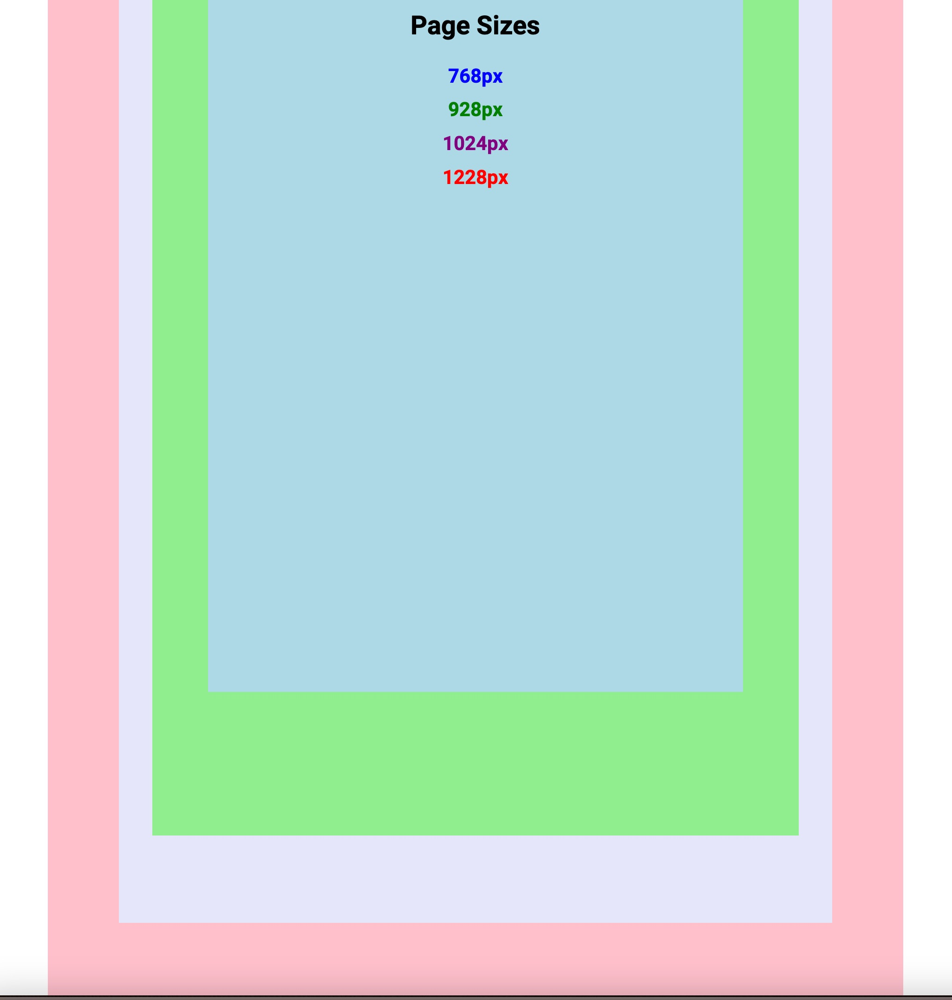Comparison of various fixed-width page sizes in pixels (px)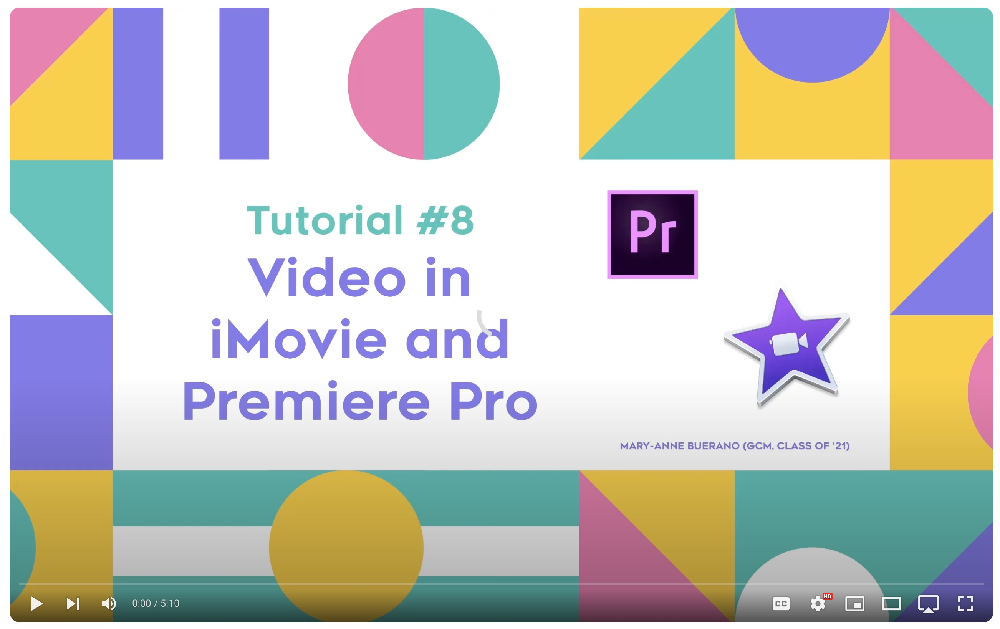A 5:10-min. YouTube video by Mary-Anne Buerano (TMU GCM ’21) on how to edit video in Apple iMovie and Adobe Premiere.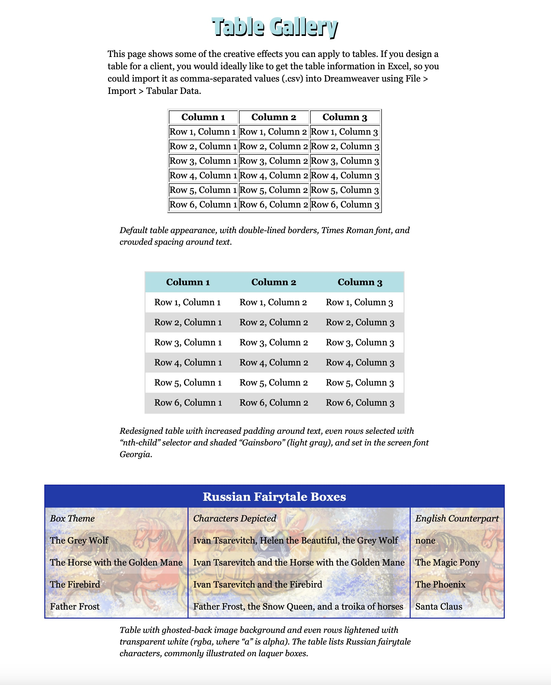This demo page shows some creative effects that can be applied to tables.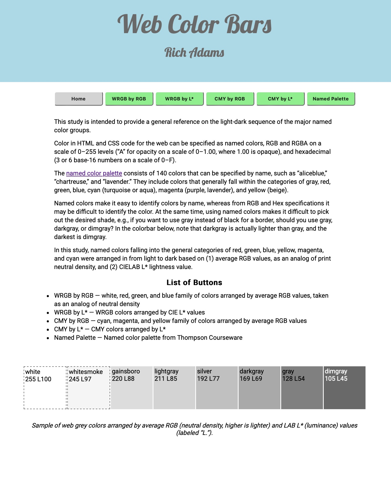These 6 pages show the named web colors arranged by RGB and CIELAB L* values.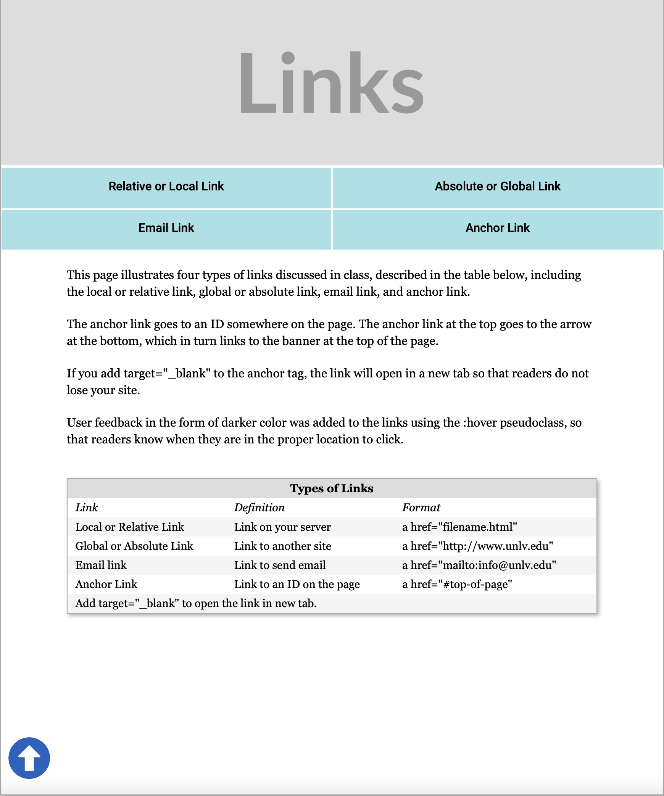This handout describes and provides examples of various types of links.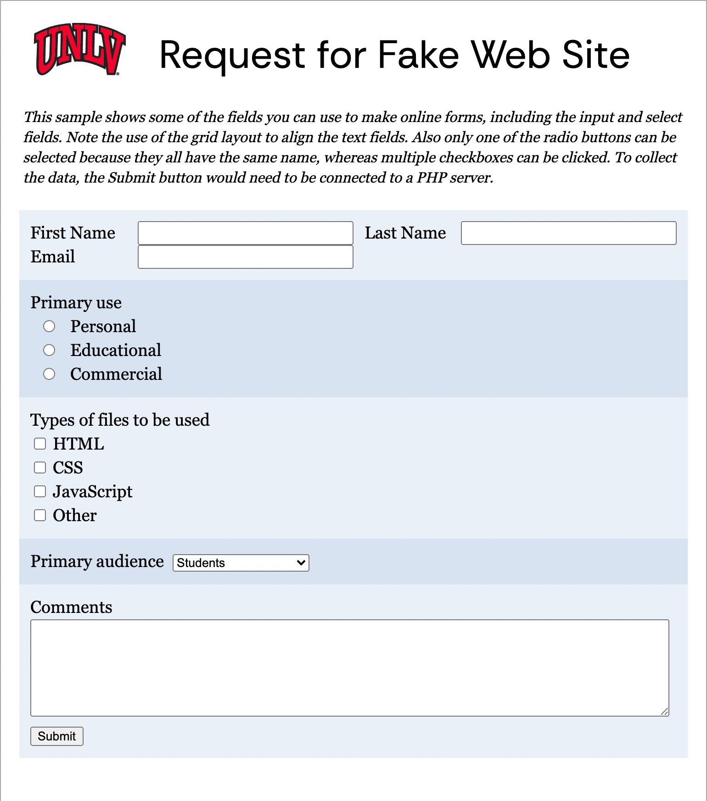Some of the fields you can use to create an online form.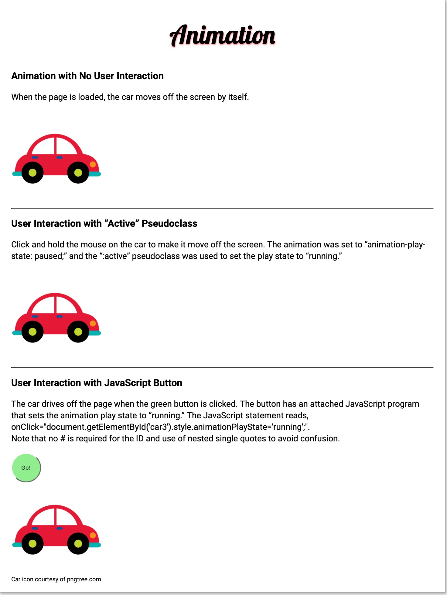This tutorial shows three ways to animate an image using CSS.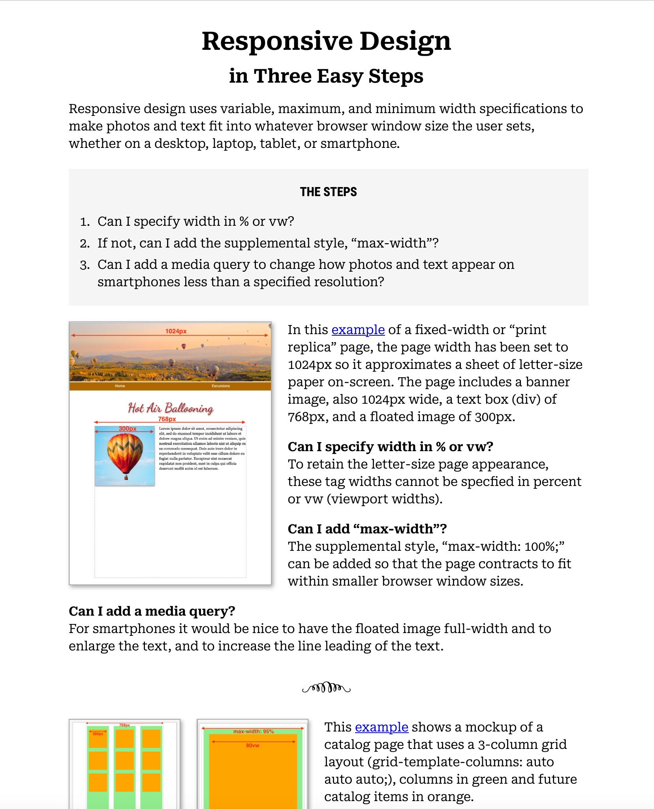Quick-reference guide to responsive design for fixed-width pages and the grid layout.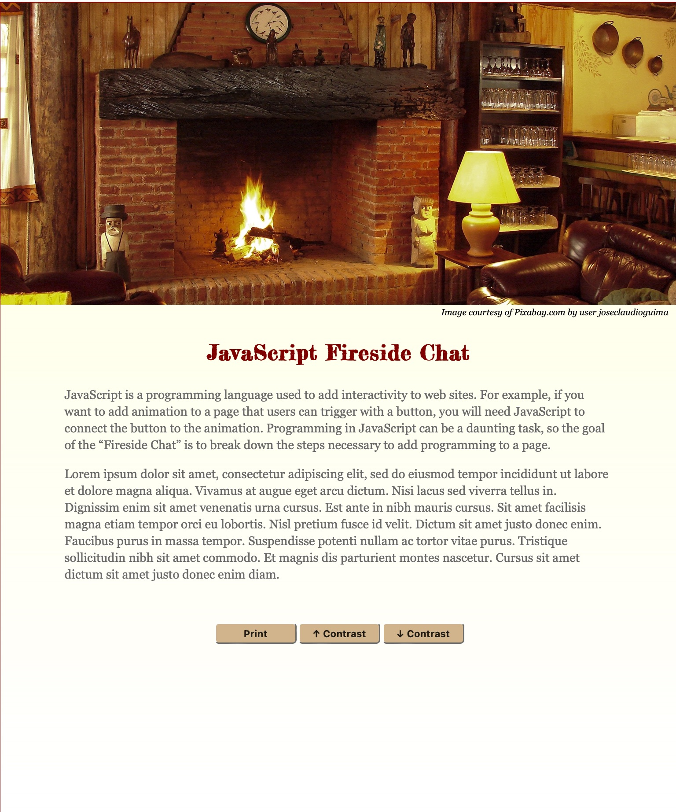This tutorial shows how to add buttons to a web page to print the page and to increase type contrast for legibility.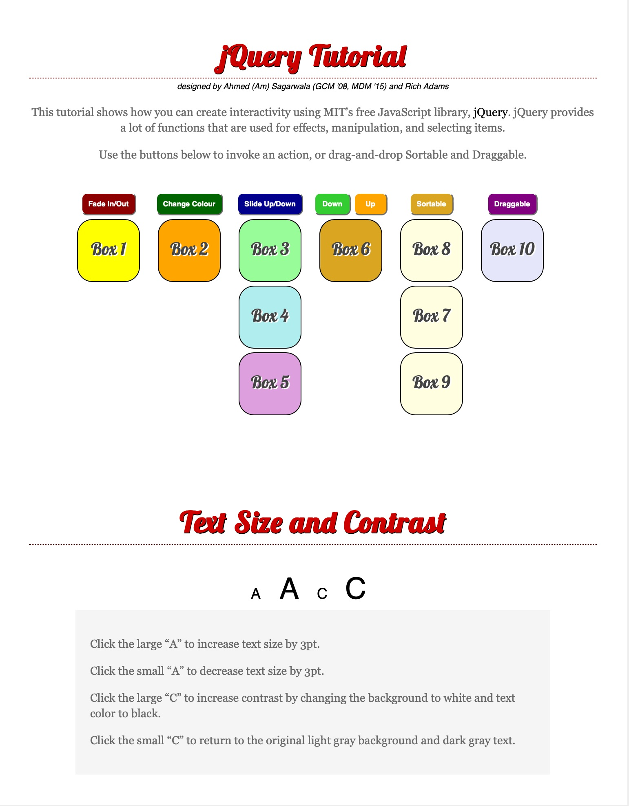This tutorial shows some examples of functions available in MIT’s free jQuery JavaScript library.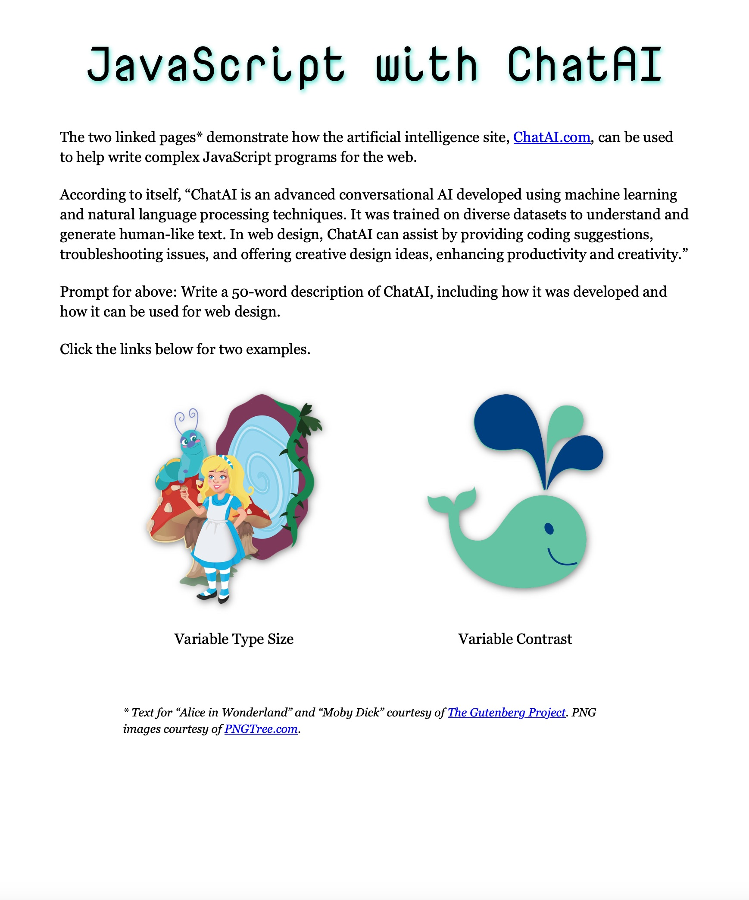This page links to two examples of how Chat AI was used to write JavaScript to improve page accessibility and also includes an example of jQuery written by Chat AI.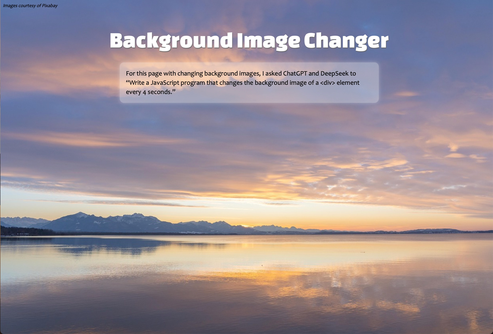Sample portfolio page emphasizing photos that change in the background using a JavaScript program.